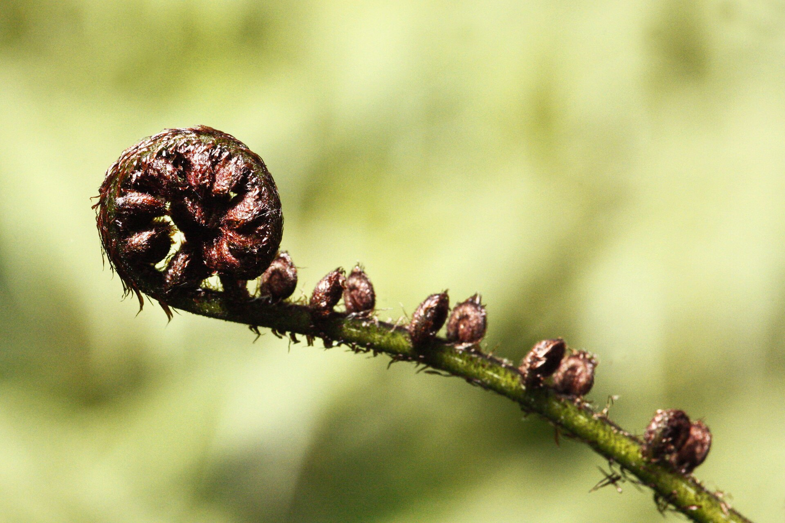
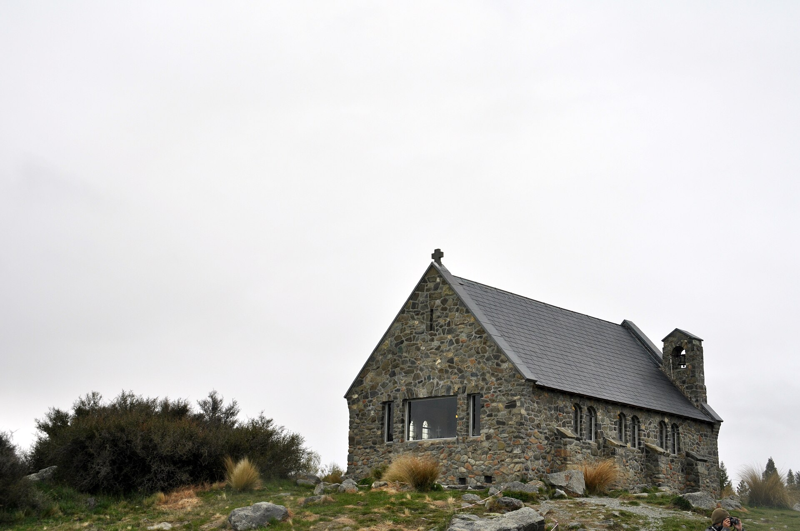

Silver fern / ponga
Cyathea dealbata. The pale underside of the frond is the national emblem — black, white, and silver on almost every All Blacks jersey and airport souvenir.
Aotearoa · New Zealand
From Auckland's harbour down to the beautiful Glenorchy, this trip strings together the country's best-known stops. A 11 to 23 December road trip: Auckland (1 night), Hamilton, Rotorua (3 nights), Wellington (2 nights)a stop in Nelson, kikora (1 night), and three days in Queenstown, with coasts, glowworms, geothermal colour, whales, and Fiordland.
Haere mai
Browse the day lists with times and booking notes, why each stop matters, kai to eat, kupu Māori to know, and wildlife to look for.

Cyathea dealbata. The pale underside of the frond is the national emblem — black, white, and silver on almost every All Blacks jersey and airport souvenir.

Nocturnal, flightless, and fiercely protected. You are more likely to meet kiwi on a guided night walk than on a roadside picnic.

Tekapo, Pukaki, and Wānaka hold the colour of crushed rock-flour water. Pair them with night skies in the Aoraki Mackenzie Dark Sky Reserve.
The loop
Four nights in Hamilton cover Waitomo and Hobbiton. The ferry lands you in Nelson before Kaikōura and the alps. Queenstown is the three day finish: town, Milford, Glenorchy.
Jump in